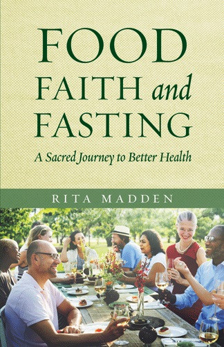

Two years ago, I sat on my couch in my East Austin apartment and decided to try something new. I had been reading about intermittent fasting for weeks. The science was compelling. The anecdotal stories were even more compelling. I was skeptical but curious. I told myself I would try it for 30 days. Just to see what happened. I didn't expect to still be doing it 730 days later.
This morning, I opened my FastingTool dashboard and looked at my data. 730 sessions logged. 18 months of consistent tracking. Thousands of hours fasted. The numbers stared back at me like a fasting-export-report card I didn't know I was earning. I scrolled through the charts and graphs and felt a weird mix of pride and disbelief. I had actually done it. Not perfectly, not without breaks, but consistently enough that the patterns were clear.
I started with 16-hour fasts, eating from noon to 8 PM. That lasted about three months. Then I shifted to 18 hours, 11 AM to 5 PM. That became my sweet spot. I stayed there for over a year. Lately, I've been experimenting with 20-hour fasts a few times a week, but 18 is still my baseline. The data shows that I'm most consistent with 18. My compliance rate is over 80%. That's not perfect, but it's sustainable.
I also tracked my weight. Not because I wanted to obsess over it, but because I wanted to see if fasting was actually doing what the studies said it would. My starting weight was 164 pounds. I'm 5'6", so that put me in the "overweight" category by BMI standards. Two years later, I weigh 142 pounds. That's a 22-pound loss. Not dramatic, but steady. I lost about a pound a month on average. That's the kind of slow, sustainable change that actually sticks.
My body fat percentage dropped from 34% to 27%. That's a bigger change than the weight loss suggests. I lost fat and kept muscle. I didn't do any extreme dieting. I just ate reasonably during my windows and fasted the rest of the time. The data shows that my weight fluctuated, but the trend was consistently downward.
My blood work is the part that surprises me the most. My HBA1c dropped from 5.7 to 5.2. That's the difference between "prediabetic" and "normal." My fasting glucose went from 98 to 85. My triglycerides dropped from 150 to 95. My HDL went up from 48 to 58. My blood pressure, which used to be 128/82, is now 110/72. Those are not small changes. Those are the kind of changes that add years to your life.
I also tracked my sleep and my mood. I didn't expect fasting to affect either, but it did. My deep sleep increased by about 20 minutes per night, on average. I wake up less often. My HRV, which is a measure of nervous system health, improved by 12%. My anxiety scores, which I tracked on a scale of 1 to 10, went from an average of 6 to an average of 3. I'm not saying fasting cured my anxiety. But it made it more manageable.
The data also showed my weak points. I break my fast early on weekends more often than on weekdays. My compliance drops during ACL Festival and around the holidays. I also tend to snack more at night if I'm stressed or tired. That's useful information. It tells me where to focus my attention.
Looking at my data, I see two distinct phases. The first six months were exploratory. I was trying different windows and learning what worked. My compliance was around 60%. I was learning. The next 18 months were consistent. I had found my rhythm. My compliance rose to 80%. I wasn't always perfect, but I was always present.
What I appreciate most is that the data doesn't judge me. It just shows me what happened. I can see the weeks I was stressed and ate outside my eating-window-planner. I can see the weeks I felt great and stuck to my schedule perfectly. The data is neutral. It's just a mirror.
I also look at my social calendar in the data. Austin is a food city. It's hard to fast here. There's brunch, there's taco Tuesday, there's happy hour, there's late-night food trucks, and there's the constant presence of amazing, ridiculous, irresistible food. I'm not someone who can ignore that. I learned to build flexibility into my schedule instead of trying to rigidly avoid all of it. The data shows that my best weeks are the ones where I built in social meals, enjoyed them, and then got right back on track. The weeks where I tried to be perfect were the weeks I crashed harder.
My roommate asked me what the most important thing I learned was. I had to think about it for a moment. I told her it's that consistency beats intensity. I'm not always perfect. I've had weeks where I broke my fast early every day. I've had weeks where I wasn't tracking at all. But I always came back. I didn't let a bad week become a bad month. That's the real skill.
The two-year mark feels like a milestone. I don't think I would have stuck with it this long without the data. Seeing the improvements on paper, seeing the charts trend upward or downward in the right direction, that kept me going. It gave me a reason to keep showing up.
I also learned that fasting isn't magic. It's a tool. It works for some things and not others. It works for weight maintenance and metabolic-analyzer health. It doesn't work for emotional eating or trauma or unresolved stress. Those things need different tools. I used the data to see where fasting was helping and where I needed other approaches.
Two years from now, I'll probably have even more data. I don't know what it will say. But I'm curious to find out. That curiosity is what keeps me going.
I still use the FastingTool's Trend Charts to see my long-term patterns.
📈 Trend Charts See your weight, blood work, and compliance over time. The fasting-trend-charts are motivating. All data stays in your browser — we never see it. The Export Report lets me generate a summary of my two-year journey.
📄 Export Report One-page summary of your 730 days. Bring it to your doctor. Or just keep it for yourself. All data stays in your browser — we never see it. And the Goal Planner helps me set intentions for the next chapter.
🎯 Goal Planner Set your fasting-goal-planner for year three. What do you want the data to show next time? All data stays in your browser — we never see it. 730 days is a long time. But it's also just the beginning. I'm not done learning. I'm not done experimenting. I'm just getting started.
— Maya, Austin
P.S. I'm going to get my blood work done again next week. I'm curious to see if the improvements have held. The data will tell the story.